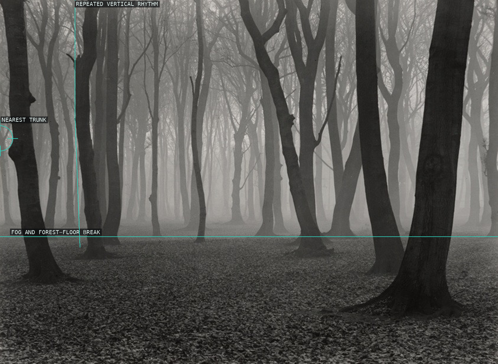
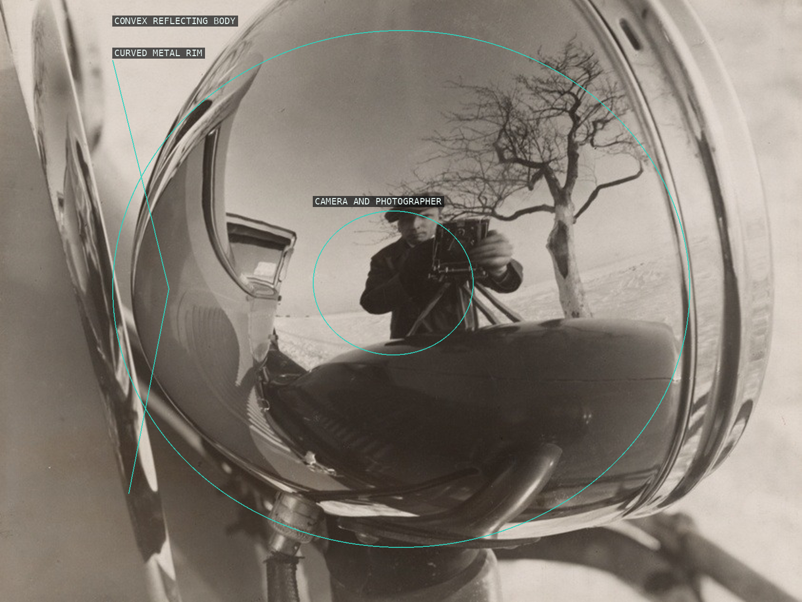
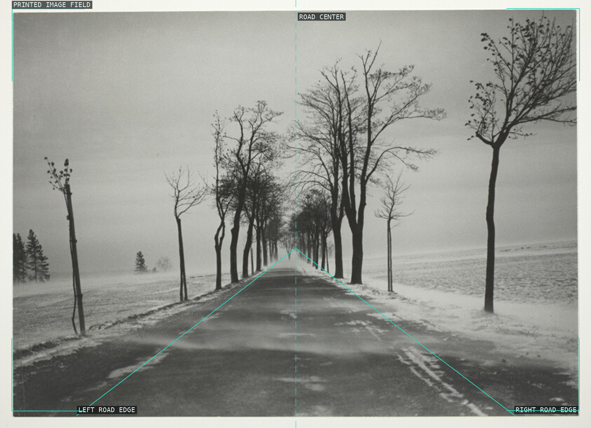
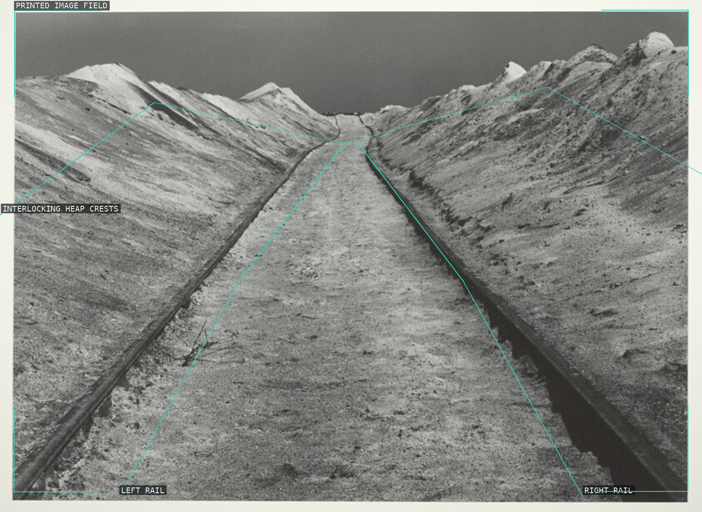
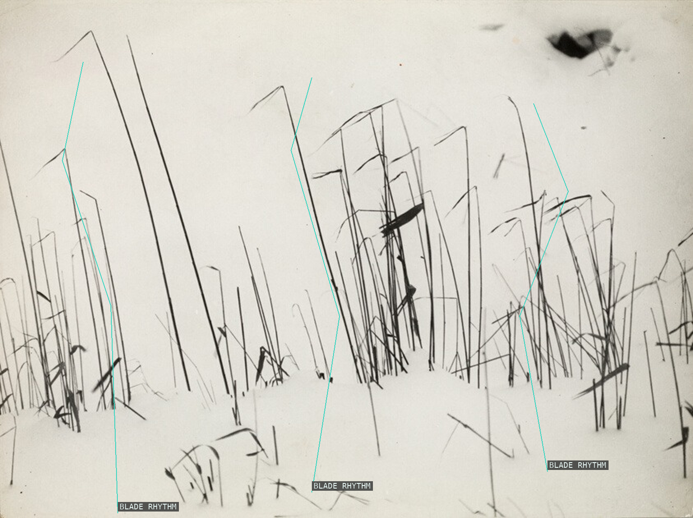
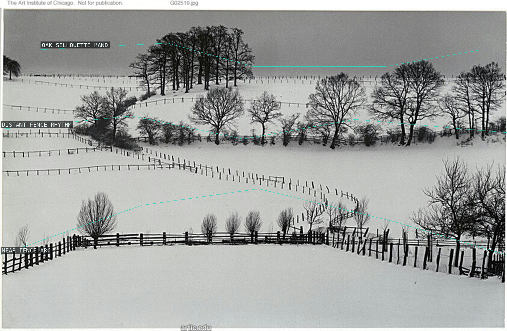
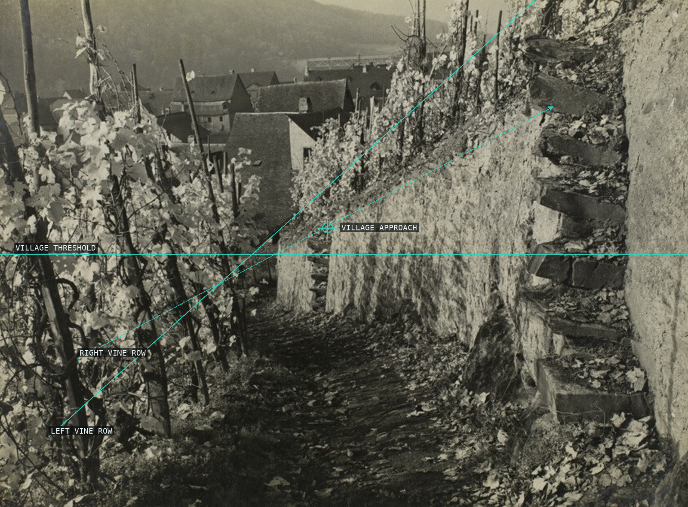
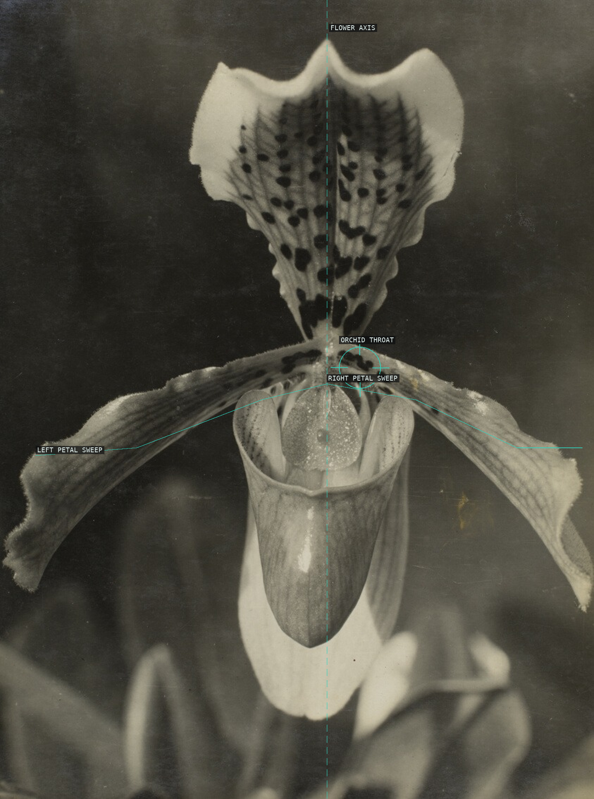
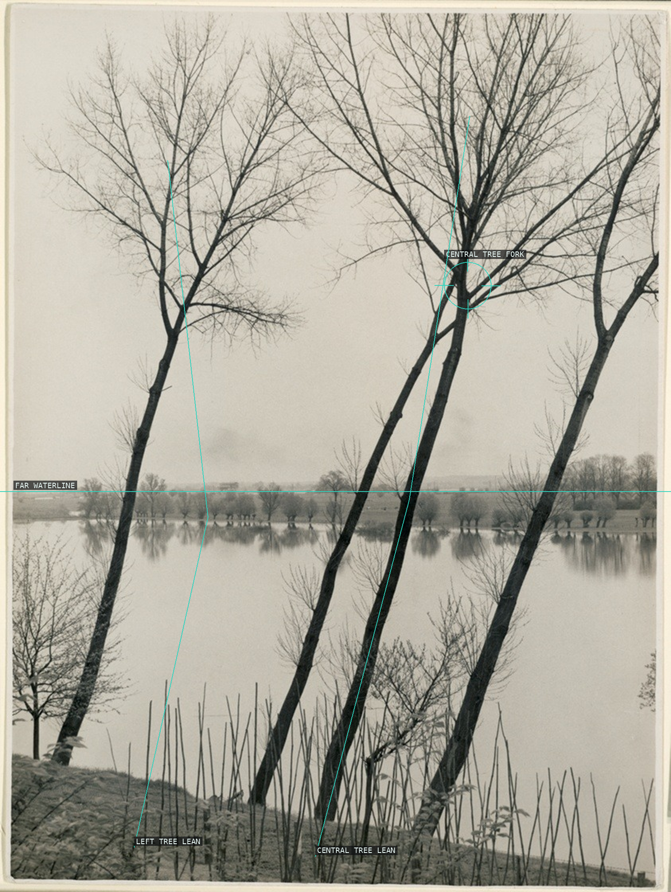
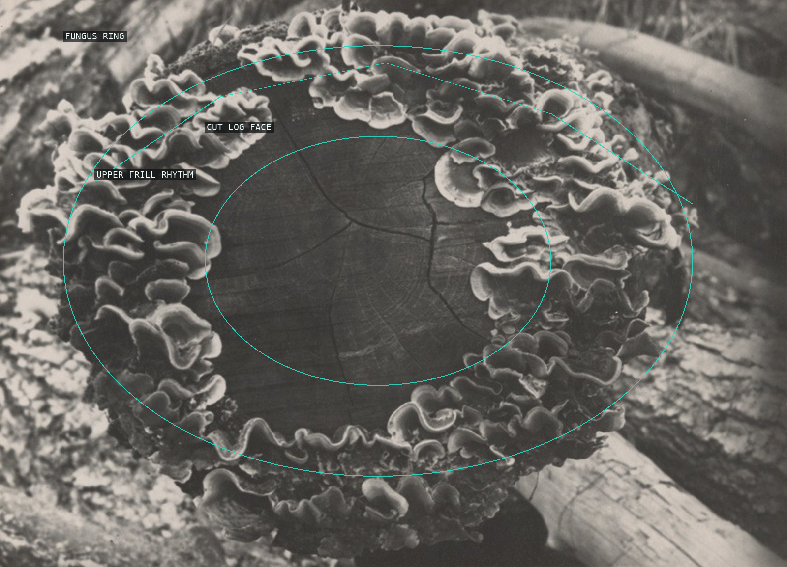

/* albert-renger-patzsch - proofs */
10 plates. Deterministic overlays rendered by the composition-analysis skill.

01-beech-forest
Fog break and repeated trunk rhythm.

02-untitled-1928-29
Convex reflection, camera, and rim.

03-country-road-snowstorm
Road center and paired receding edges.

04-slag-heaps-iron-work
Rails and interlocking heap crests.

05-blades-grass-snow
Three sparse blade rhythms.

06-oak-preserve-wamel
Fence arcs and oak silhouette band.

07-path-vineyards-eller
Converging path and vine rows.

08-throat-orchid
Flower axis, throat, and petals.

09-untitled-1930s
Tree leans against the waterline.

10-baumpilz-fungi
Fungus ring around the log face.